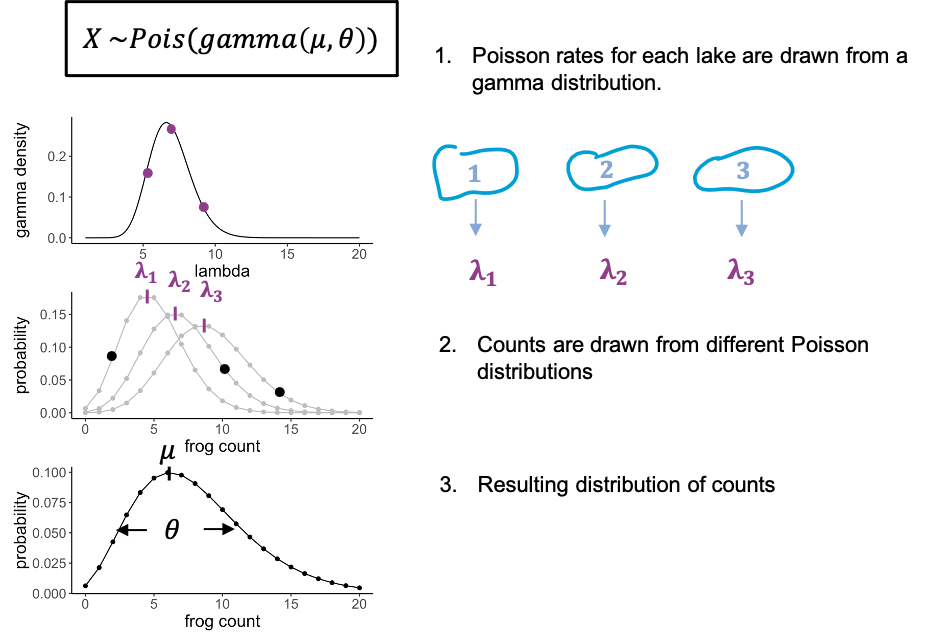

Content from What is sampling
Last updated on 2023-11-21 | Edit this page
Estimated time 5 minutes
Overview
Questions
- What is sampling?
- What requirements should a good sample fulfill?
Objectives
- Introduce the concept of sampling.

Let’s start with an example, and thereby define some terminology. We have a lake with frogs in it, and there are light and dark green frogs. There’s a sunny side of the lake, and a shadowy area by the trees. Now imagine you want to estimate the fraction of light green frogs in the lake. There are too many frogs to count them all, so you catch a few and count how many of them are light coloured. This is a sample. A sample are randomly independently drawn events from a population of interest. The population of interest, in this case, are all the frogs in that lake. How can we draw randomly and independently? One obvious thing you could randomize in this experiment is the location at which you cath the frogs, because from the above picture you could get the impression that light-coloured frogs gather more in the shadows, while the dark-green frogs like the sun. Therefore, if we caught all the frogs in the same area, like in sample 1, this would probably over-represent light frogs, thus not representing the population well. When randomizing the locations, this is less likely to be the case (see for example sample 2). You get similar problems if the observations are not independent. One example of dependent observations would be if you start with one frog, then catch the one right next to it, and so on. This is also likely to over-represent one colour of frogs, and the reason why observations shouldn’t depend on each other. The sample size is the number of frogs in one sample.
Inline instructor notes can help inform instructors of timing challenges associated with the lessons. They appear in the “Instructor View”
Content from What is a probability distribution?
Last updated on 2023-11-21 | Edit this page
Estimated time 12 minutes
Overview
Questions
- What is a probability distribution?
Objectives
- Describe how a probability distribution maps outcomes to probabilities
- Explain the difference between discrete and continuous distributions
Overview probability distributions
Most data analyses assume that data comes from some distribution. A probability distribution assigns probabilities to possible outcomes of an experiment. In terms of sampling, even if the sampling is supposed to be random, it doesn’t mean that there are no rules – so one could say that the probability distribution defines the rules for randomness.
Let’s get back to our example of the lake of frogs, which is inhabited by light and dark green frogs. Let’s say, the true fraction of light green frogs is \(1/3\), and you decide sample of \(n=10\) frogs from that lake at random. Then, if you count the number of light-colored frogs within that net, there are 11 possible outcomes: The number can be between 0 and 10.
Below, you see a plot out of this, where each of these events has a probability. A suitable distribution for describing this scenario is the binomial distribution, which assumes a number of trials (frog catches) which can have two outcomes (light, dark).

If the true fraction of light frogs is one third, then the most likely outcome is catching 3 light frogs. Seeing 10 light frogs is rather unlikely: The probability is close to zero, and we would consider this a rare event.

Challenge: Which of the following statements are true?
- A probability distribution assigns probabilities to possible
outcomes of an experiment.
- The probabilities in a statistical distribution sum/integrate up to
1.
- If the experiments are not randomized, the results don’t follow a statistical distribution.
Answers 1 and 2 are correct. To 3: If experiments are not randomized, the results still follow some distribution, but they are likely to not represent reality well.

Discrete and continuous distributions
There are two types of probability distributions: discrete and continuous.
A discrete distribution is what we have just seen, in this case the observations can only take integer values, in our example the counts from 0 to 10. In between those values, the probabilities are zero, that’s why it’s called a probability mass function: The probability mass is on defined points.
In a continuous distribution, we have a probability density function. An example is the Gaussian distribution. That would be suitable if we measured the sizes of frogs, and they are well described by a mean size and a variance. On a continuous scale, there are infinitely many values, so that the probability for a specific value, for example a frog size of exactly 9cm is zero. What makes sense instead is to ask for the probability of an observation to fall into a certain interval, for example between 8 and 10 cm, and we get this probability from integrating over the probability density function.
The value \(1.5\) is not discrete, and can therefore not occur in a discrete distribution. Its probability is zero.
Content from The binomial distribution
Last updated on 2023-11-21 | Edit this page
Estimated time 5 minutes
Overview
Questions
- What is the binomial distribution?
- What kind of data is it used on?
Objectives
- Explain how the binomial distribution describes outcomes of counting.
The binomial distribution is what we have just seen in the example: We use it when we have a fixed sample size and count the number of “successes” in that sample. Examples are:
- how many locations in the genome carry a mutation
- the number of cells within a sample that show a certain phenotype
- how many patients out of 100 have a certain disease
- how many out of 10 frogs are light green
The binomial model has two parameters, which means the probabilities for the individual outcomes depend on two things: - \(n\) is the number of trials, or frogs, or patients, and it’s fixed. - \(p\) is the success probability.
Then the probability of observing \(k\) successes out of \(n\) draws (for example \(k=4\) light coloured frogs out of \(N=10\)) can be described by this formula:
\[P(X=k) = {n\choose k}p^k(1-p)^k\]
You don’t have to remember this piece of math – it’s just to make the point that you can calculate the probability of an event that is modeled with the binomial distribution, if you know the success probability \(p\) and the number of trials \(n\), i.e. the parameters.
Here is what the distribution looks like for a success probability of 0.3 and a sample size of 10.
The expected value of the binomial is \(n \times p\), which is quite intuitive: If we catch 10 frogs and the probability of being light-green is 0.3, then we expect to catch 3 light-green frogs on average.
Content from Probability distributions in R
Last updated on 2023-11-21 | Edit this page
Estimated time 12 minutes
Overview
Questions
- How can I calculate probabilities in R?
Objectives
- Demonstrate and practice the use of the base R functions for calculating probabilities.
- Explain the concept of cumulative distribution.
Before we look at more distributions, let’s get some hands-on
experience in R!
R knows a whole range of distributions: Here
is a list of them.
For each distribution, R has four different function calls: For the
binomial distribution, these all end with binom:
- dbinom: density
- pbinom: cumulative distribution function (percentage of
values smaller than)
- qbinom: quantile function (inverse of cumulative
distribution)
- rbinom: generates random numbers
The first letter specifies if we want to look at the density, probability distribution/mass function, quantile or random numbers. The suffix specifies the distribution.
The arguments depend on the distribution we are looking at, but always include the parameters of that function.
Calculating probabilities
Let’s use the example where we caught 10 frogs and count how many of them are light-colored.
For known parameters, we can calculate the the chances of counting exactly 5 light-colored frogs:
R
n = 10 # number of frogs we catch
p = 0.3 # true fraction of light frogs
dbinom(x=5, size=n, prob=p)
OUTPUT
[1] 0.1029193We can ask for the probability of catching at most 5 light frogs. In
this case, we need the cumulative probability distribution starting with
p:
R
pbinom(q=5, size=n, prob=p) # at most
OUTPUT
[1] 0.952651Similarly, we can ask for the probability of catching more than 5 light frogs:
R
pbinom(q=5, size=n,prob=p, lower.tail=FALSE) # larger than
OUTPUT
[1] 0.04734899Catching at least 5 light frogs is a rare event.
- Exactly 7 persons:
R
dbinom(x=7,size=100,prob=0.04)
OUTPUT
[1] 0.05888027- At least 7 persons:
R
pbinom(q=6, size=100, prob=0.04, lower.tail=FALSE)
OUTPUT
[1] 0.1063923Content from The Poisson distribution
Last updated on 2023-11-21 | Edit this page
Estimated time 10 minutes
Overview
Questions
- What is the Poisson distribution?
- What kind of data is it used on?
Objectives
- Explain how the Poisson distribution is derived from the
binomial.
- Learn to apply the Poisson distribution in R
A special case of the binomial distribution
There is an approximation for the binomial distribution which can often be convenient, specifically if we have
- many trials (large \(n\)) and
- a small success probability \(p\).
An example:
- We now fill the net for 1h, which is for a fixed period of time.
- We catch about 100 frogs per hour, which means after an hour we have
about 100 frogs in the net, and \(n \approx
100\).
- The fraction of light frogs is low, only 2 % (\(p=0.02\)).
- After filling the net, we count only the light ones.
We can now ask how many light frogs we can expect to catch per hour.
This expected number is called \(\lambda\), and it’s given by
\[\lambda = n*p = 100 \cdot 0.02 =
2.\]
For the possible outcomes, we again just look at the number of light frogs, we are not interested in the number of dark frogs, or how many frogs we caught in total. In this scenario we have reduced the parameters to just one, the rate lambda, which is the expected number of frogs per hour. And the probabilities of the outcomes can be approximated with a Poisson distribution.
What is the Poisson used for?
Even though the Poisson is derived as an approximation of the Binomial, we don’t necessarily need two categories of events to use it. We can also use it to count events of a single category.
For example, consider a two lakes with frogs of only one colour. We might want to compare the density of frogs in these lakes, which can be done by comparing the Poisson rates. For this, we count frogs within \(2 m^2\) regions in both lakes. For each individual lake, this counting process could be described by a Poisson, with the rate giving the average number of frogs per \(2 m^2\).
In general, the poisson describes counting events over a fixed domain, which can be a period of time, or a fixed space. We assume here that events have an underlying rate, called lambda.
Examples:
- Counting frogs for an hour, or within a defined area of the
lake.
- counting cells or particles in microscopy images within a fixed volume
- counting how many times something happens in the cell within a fixed period of time.
- Also mutations in the genome can be approximated by Poisson, because the genome has many base pairs, and the fraction of mutated base pairs is low.
Properties of the Poisson distribution
The distribution has only one parameter, the rate.
The probability for counting \(k\) events over whatever fixed domain you have chosen is
\[\large P(X=k) = \frac{\color{purple}\lambda^k e^{-\color{purple}\lambda}}{k!} .\]
In the next plot, Poisson distributions for different rates are shown:
If we look at the shape of the distribution, we see that
- for low rates, it is clinched towards zero and has long tails towards larger values.
- for larger rates (for example a rate of \(10\) shown here in purple) the shape looks more and more like a Gaussian. Indeed, high-valued counts can often be well described with a Gaussian as well.
Another important feature of the Poisson is that its variance and mean are the same, they are both lambda. This means in turn that we can estimate lambda from the sample mean.
Challenge
We are in a diagnostic laboratory that gets blood samples from incoming hospital patients and tests them for some disease. Which of these experiments can be modeled with a Poisson distribution?
- Counting the number of positive samples out of 50 samples that get
tested successively.
- Counting the number of samples that test positive within an
hour.
- Counting the number of samples that get tested within an hour.
All of these scenarios can be modeled with a Poisson. Counting the number of positive samples out of 50 is more suitable for a binomial distribution, but can indeed be approximated by Poisson.
Content from Simulations in R
Last updated on 2023-11-21 | Edit this page
Estimated time 7 minutes
Overview
Questions
- How can I make my own data in R?
Objectives
- Learn to use the random number generators in R to simulate data.
Here’s a short interlude on random numbers in R, which you can use to simulate your own data. This can be very useful to set up toy models and see what the data or certain plots would look like in theory.
For example, we could simulate frog counts from 100 binomial experiments, that is the counts of light colored frogs from filling a net one hundred times:
R
set.seed(85)
size = 10 # number of frogs per net
prob = 0.3 # true percentage of light colored frogs
n = 100 # number of binomial experiments
binomial_frog_counts <- rbinom(n=n, size=size, prob=prob)
head(binomial_frog_counts)
OUTPUT
[1] 3 1 2 3 3 4Here, we used set.seed() for reproducibility: The seed
gives an initialization to the process of drawing random numbers. So any
time we run the same simulation with the same seed, we will get the same
random numbers. If we don’t set the seed, the random numbers will look
different each time we run the code.
R
set.seed(81)
# 1. simulation
frog_counts <-rpois(n = 200, lambda = 4)
# 2. calculate the mean
mean(frog_counts)
OUTPUT
[1] 3.955Content from The Gamma-Poisson distribution
Last updated on 2023-11-21 | Edit this page
Estimated time 14 minutes
Overview
Questions
- What is the Gamma-Poisson distribution?
- What kind of data is it used on?
Objectives
- Explain the Gamma-Poisson distribution and how it compares to the Poisson distribution.
- Further practice the use of probabilities and random numbers in R.
The Gamma Poisson distribution
In biology we often have the problem that the Poisson doesn’t fit very well, because the observed distribution is more spread out than expected for Poisson, that means the variance is larger than the mean.This is due to additional variation that we haven’t captured, or that we cannot control for.

To stay with the frogs counts – but this time each individual frog was caught from a different lake. And each lake has slightly different properties that affect the rate at which we can catch frogs in it. There might be more or less frogs in them, or better hiding places.
We can model this by saying that for each data point, the rate lambda is drawn from a distribution, in this case a gamma distribution. You don’t have to know anything about the gamma distribution, just that it has a bell shape, and thus gives us some average rate and a variance. What we then have is individual frog counts that all come from a slightly different Poisson distribution, so that the overall distribution will be more spread out than each single Poisson.
We call this a gamma-poisson distribution. It’s a poisson distribution where the rate \(\lambda\) for each data point was drawn from a gamma distribution. It has two parameters: the mean (average rate), and a scale parameter, which indicates how much the lambdas are spread.
Examples for usage:
- modelling gene expression data, because there is always biological variation between the samples, and we cannot measure where exactly it comes from
- modelling cell counts that come from slightly different volumes, or from different individuals.
The Gamma Poisson distribution in R
The Gamma Poisson distribution goes by two names: “Gamma Poisson” or
“negative binomial”. In R, its suffix is nbinom. To make
things more confusing, the Gamma Poisson can be parametrized in
different ways. This means, it is possible to describe the same
distribution with different combinations of parameters.
Above, I introduced a parametrization with
- mean \(\mu\) (the average Poisson
rate) and
- scale \(\theta\) (a measure for how much the Poisson rate varies between individual counts),
because I find it most intuitive. The argument mu in
dnbinom lets you define \(\mu\). The argument size is
the inverse of \(\theta\), that is for
a small size you will get a distribution with a large
overdispersion (=spread). For very large values of size,
the distribution will tend towards a Poisson distribution.
Compare Gamma poisson to the Poisson distribution
To demonstrate how the Gamma Poisson distribution differs from a Poisson, let’s compare the means and variances.
- Simulate 100 random frog counts with a Poisson rate of 4 then
calculate the mean.
- Simulate 100 random frog counts with a Poisson rate of 4, then
calculate the variance using the function
var. - Simulate 100 random frog counts from different lakes with a mean 4
and
size=2, then calculate the mean. - Simulate 100 random frog counts from different lakes with a mean of
4 and
size=2, then calculate the variance using the functionvar.
R
library(tidyverse)
# 1. Calculate the mean of a Poisson distribution
rpois(n=100, lambda = 4) %>% mean()
OUTPUT
[1] 4.13R
# 2. Calculate the variance
rpois(n=100, lambda = 4) %>% var()
OUTPUT
[1] 3.555152R
# 3. Gamma poisson mean
rnbinom(n=100, mu=4, size=2) %>% mean()
OUTPUT
[1] 4.14R
# 4. Gamma poisson variance
rnbinom(n=100, mu=4, size=2) %>%
var()
OUTPUT
[1] 10.75747Content from The Gaussian distribution
Last updated on 2023-11-21 | Edit this page
Estimated time 2 minutes
Overview
Questions
- What is the Gaussian distribution and what kind of data is it used on?
Objectives
- Refresh the Gaussian distribution.
- Give examples what it is used on.
The Gaussian distribution
We covered the Gaussian – also known as Normal distribution earlier in this tutorial as an example, and you have most likely come across it before.
It is applicable to repeated measurements of the same thing, for example
- frog lengths,
- temperatures or
- pixel intensities.
The Gaussian distribution is continuous and has two parameters:
- the mean, which is estimated by the sample mean, and
- the variance, which is estimated by the sample variance.
Content from Visualizing distributions
Last updated on 2023-11-21 | Edit this page
Estimated time 5 minutes
Overview
Questions
- How can I visualize the distribution of my data?
- How can I find out whether my data is well described by a certain probability distribution?
Objectives
- Introduce the histogram, ECDF and QQ-plot as tools for comparing an empirical to a theoretical distribution.
Tools for visually comparing distributions
Usually, we have some data and want to find the “right” distribution for it. That means, we want to find a distribution that models the data in a suitable way. The workflow should look something like this:
-
Fit your data to a distribution that you consider
plausible. We’ll see how to do this in R. The fit will give you
the best parameters for this distribution, given your data.
-
Visually compare the theory to your data points.
The theory in this case is the fit you just obtained. In the
visualization, a good fit doesn’t show systematic deviations of the data
points from theory.
-
Do the same with other plausible
distributions.
- Decide which fit looks best to you.
In this episode, I’ll introduce the most common visualizations for empirical distributions. In the following episodes, we’ll see how to produce them in R.
The histogram

Once we have fitted a distribution to the data, we can visually compare the theory, that is the fitted distribution, to the actual data and decide whether this is a good fit. One very common thing to look at is the histogram. The more data points you have, the more it resembles the underlying probability distribution. So we could look at this histogram here and check whether it looks similar to the Gaussian shape, shown in blue. A problem about this plot is that, as you might have noticed already, a lot of distributions look roughly bell-shaped. And often it’s difficult to tell subtle differences from a histogram.
The cumulative distribution
This is why it is also useful to look at the cumulative distribution. For every value \(k\), the cumulative distribution gives the percentage of data points that have a smaller value than this \(k\).

In this case, you can look up a certain frog size, and the graph will tell you what percentage of frogs is smaller than that. For example, if we look up the size of 6 cm, the cumulative distribution tells us that roughly 75% of the frogs in the sample are smaller than 6 cm. The empirical cumulative distribution comes from the data, and one little step for each data point. The theoretical distribution gives the percentage of data points that you’d expect to be smaller than a certain value, for the distribution that you are comparing to. In this graph, it’s often easier to see systematic deviations from the expectation, for example here the blue line is substantially steeper than the black line, so maybe here we are comparing to a theoretical distribution with a too low variance.
The QQ-plot
Another useful plot is the QQ-plot. It’s very often used for checking whether the data is normal, but it can also be used for comparing to other distributions.

Here, we plot sample quantiles against theoretical quantiles. The 25th quantile is the value \(k\) at which 25% of the data points are smaller then k. You can determine the quantile for each data point, and compare it to theory, so each point in this plot is a comparison between theory and data. The nice thing about this plot is that when the theory and data match well, all points end up on a straight line. And it’s easy for our eyes to decide whether something is a straight line or not.
A note on fitting
When we say we “fit” a distribution, we are usually talking about the maximum likelihood approach. This means we find the parameters for which it is most likely to see the given data. This is an optimization problem - and thus can be solved conveniently by the computer. You might also hear people say they minimize the deviance when they fit data, and this is just another term for minimizing the distance between the line (theory) and the points (data). The exact mathematical formula for the deviance to be minimized depends on the type of distribution we are fitting to – for example, when fitting a Gaussian distribution, we minimize the sum of squares. But no worries: The tools for fitting that you’ll get to know in this tutorial know their formulae :)
Content from Histograms in R
Last updated on 2023-11-21 | Edit this page
Estimated time 15 minutes
Overview
Questions
- How can I plot a histogram of my data in R?
- How can I compare my data to a distribution using histograms?
Objectives
- Give examples for and practice plotting histograms with
ggplotandgoodfit. - Learn to interpret the results.
Start with some data
For demonstration, let’s simulate frog counts and sizes with random draws from a Poisson and a Gaussian distribution. This code should by now look familiar to you:
R
set.seed(51) # set a seed for reproducibility
frog_counts <-rpois(n = 200, lambda = 4)
frog_sizes <- rnorm(n = 200, mean = 7, sd = 2)
frog_counts_different_lakes <- rnbinom(n=200, size=2, mu=4)
Plotting a histogram
We can then use ggplot2 to plot histograms from the
simulations. The histogram will have a shape that is specific for the
distribution:
R
data.frame(frog_counts) %>%
ggplot(aes(x=frog_counts))+
geom_histogram(binwidth=1)
An automatic bin-width of 30 is chosen. Decide for yourself whether
this gives you a good overview over your data. It’s often a good idea to
play around with the binwidth parameter.
Relation between histogram and distribution function
The theoretical distribution gives the expected frequency of the random numbers.
For example for the Poisson frog counts, we can calculate the expected frequency of the counts from 0 to 20:
R
counts <- 0:20
expected_freq <- dpois(counts, lambda = 4) * length(frog_counts)
Then we can plot the expected counts as a line on top of the histogram:
R
data.frame(frog_counts) %>%
ggplot(aes(x=frog_counts))+
geom_histogram(binwidth=1)+
geom_line(data=data.frame(counts,expected_freq), aes(counts,expected_freq))

The goodfit function
You might not want to code this plot every time you visually inspect a fit. Luckily, there are convenient functions that do this for you.
The goodfit function from the vcd package
allows you to fit a sample to a discrete distribution of interest.
Here, we fit the frog counts to a Poisson:
R
library(vcd)
my_fit <- goodfit(frog_counts,"poisson")
my_fit$par
OUTPUT
$lambda
[1] 3.83R
plot(my_fit)

This is how a good fit looks like: The bars all roughly stop at zero, some above and some below, which is due to the sample’s randomness.
This histogram in the above challenge should show you that there is a systematic problem: The bars at the periphery hang very low and those around the peaks hang high. This indicates that the fit isn’t too good.
Exercise: Fit a Gamma-Poisson
Start with the following set-up:
R
set.seed(51) # set a seed for reproducibility
frog_counts_different_lakes <- rnbinom(n=200, size=2, mu=4)
- Fit the frog counts from different lakes with a Gamma-Poisson
distribution instead (hint: in the
goodfitfunction, it is callednbinomial).
- Can you make out the visual difference between a good and a bad fit?
Content from The cumulative distribution function
Last updated on 2023-11-21 | Edit this page
Estimated time 3 minutes
Overview
Questions
- What is the empirical cumulative distribution function?
Objectives
- Demonstrate the cumulative distribution function with an example.
The cumulative distribution is the integral of the distribution, and
thus the empirical cumulative distribution is the integral of the
histogram. It gives you the percentage of values that are smaller than a
certain value.
We can visualize it with stat_ecdf in
ggplot2.
R
data.frame(frog_sizes) %>%
ggplot(aes(x=frog_sizes))+
stat_ecdf()
As for the histogram, you could calculate the expected values for the cumulative distribution and add them to the plot:
R
sizes <- seq(0,14,.5)
theoretical_cdf <- pnorm(sizes, mean=7, sd=2)
data.frame(frog_sizes) %>%
ggplot(aes(frog_sizes)) +
stat_ecdf()+
geom_line(data=data.frame(sizes,theoretical_cdf), aes(sizes, theoretical_cdf),colour="green")
Off this plot you can read for a frog size of \(x\) (e.g. 7cm), that about 50% of the values are smaller than this value. So this is really just another way to display the histogram.
Content from The QQ-plot
Last updated on 2023-11-21 | Edit this page
Estimated time 8 minutes
Overview
Questions
- What is the QQ-plot?
- How can I create a QQ-plot of my data?
- Why is it useful?
Objectives
- Demonstrate the calculation of quantiles in R.
- Explain the QQ-plot.
- Introduce functions to make a qq-plot in R.
The QQ-plot
The qq-plot compares the quantiles of two distributions.
Quantiles are the inverse of the cumulative distribution, i.e., the
qnorm function is the inverse of pnorm:
You can use pnorm to ask for the probability of seeing a
value of \(-2\) or smaller:
R
pnorm(q = -2,mean=0, sd=2)
OUTPUT
[1] 0.1586553Then you can use qnorm to ask that is the value for
which 15% of the other values are smaller. Here, I demonstrate this by
plugging the result into the pnorm function into the
qnorm function:
R
qnorm(p= pnorm(q = -2,mean=0, sd=2), mean=0, sd=2)
OUTPUT
[1] -2Let’s compare the quantiles of the simulated frog sizes to the theoretical quantiles of a normal distribution. There are specialized functions for qq-plots, so we don’t have to calculate the theoretical values by hand:
R
data.frame(frog_sizes) %>%
ggplot(aes(sample=frog_sizes))+
geom_qq()+
geom_qq_line()

By default, the geom_qq function assumes that we compare
to a standard normal distribution.
This fit doesn’t look too bad, although for low values the points stray
away from the line. This shouldn’t surprise you, because remember: The
normal distribution approximates the Poisson distribution (with which
the simulation was generated) well for large values, but has limitations
for low-valued counts.
Let’s set up a qq-plot where we compare to a Poisson distribution:
R
data.frame(frog_counts) %>%
ggplot(aes(sample=frog_counts))+
geom_qq(distribution=qpois, dparams=list(lambda=mean(frog_counts)))+
geom_abline()
This fit looks better. We can still argue whether a qq-plot is the best representation for a Poisson fit, because due to the distribution’s discreteness, many data points end up on the exact same spot in the plot (overplotting). Thus, we loose information in this visualization.
One fits all - fitdistrplus package
If you want a quick overview, you can use the
fitdistrplus package, which produces a series of plots.
Suppose you fit the frog counts to a normal distribution:
R
library(fitdistrplus)
my_fit <- fitdist(frog_counts, dist = "norm")
my_fit # gives you the parameter estimates
OUTPUT
Fitting of the distribution ' norm ' by maximum likelihood
Parameters:
estimate Std. Error
mean 3.830000 0.1495176
sd 2.114498 0.1057248R
plot(my_fit)
With some practice, this plot quickly allows you to see that you are comparing discrete data to a continuous distribution. Also, the QQ-plot doesn’t really give a straight line and the histogram seems to be skewed to the left, compared to theory.
R
my_fit <- fitdist(frog_counts, dist = "pois")
plot(my_fit)

Content from Summary
Last updated on 2023-11-21 | Edit this page
Estimated time 5 minutes
Sampling and distributions
- In statistics, experiments are viewed as sampling
processes. Sampling means “drawing events” from a population of
interest. If the events are drawn randomly and independently, the
results are more likely to give a good representation of reality.
- A probability distribution assigns probabilities
to the possible outcomes (in continuous distributions: to intervals of
outcomes).
- Discrete distributions give probabilities for discrete outcomes, for example counts. For continuous distributions, every value is assigned a density, and probabilities can be calculated by integrating over the density in the interval of interest.
Common distributions of biological data
- The binomial distribution models the number of
successes in a series of trials.
- The Poisson distribution is often used for modeling
count data. It assumes that counts were over a fixed volume or period of
time. It is an approximation of the binomial distribution.
- The negative binomial distribution is useful for
overdispersed count data, that is count data that are poorly fit by
Poisson, because they are not collected over fixed domains, or are
subject to some additional variation that isn’t captured by
Poisson.
- The Gaussian or normal distribution models repeated measurements of the same thing, and is a continuous distribution. Many distributions (also discrete ones) can be approximated by a Gaussian distribution for sufficiently large sample sizes.
Confused by what to approximate with what? Here is an overview:
What distribution models your data best?
Fit your data to a distribution that you consider plausible. The fit gives you the best parameters for this distribution given your data.
Visually compare the theory (i.e. the fitted distribution) to your data points. A good fit doesn’t show systematic deviations of the data points from theory.
Do the same with other plausible distributions.
Decide which of the fits looks best to you.
Don’t be discouraged if step 4 isn’t always obvious! It just takes a little practice. The following exercises are designed to build some intuition on that.
Content from Exercises
Last updated on 2023-11-21 | Edit this page
Estimated time 90 minutes
Exercises
Here are some exercises for you to try yourself out in R, to practice your knowledge on probability distributions, and to construct and interpret meaningful visualizations.
Please feel encouraged to work in RStudio on your own computer for this! This way, you will have an installation and some scripts ready once you decide to work on your own data.
To install all packages necessary for completing the exercises and running the examples in this tutorial, run the following command on your computer:
R
source("https://www.huber.embl.de/users/kaspar/biostat_2021/install_packages_biostat.R")
The discoveries data
Consider the discoveries data. This data set is
contained in base R and has the number of “great inventions” for a
number of years. These are clearly count data.
- Look up the example data using the R
helpfunction.
- Compare the fit to a Poisson with a fit to a negative binomial
(=gamma poisson) distribution.
- Which of the two distribution do you think describe the data better?
And what could be a reason for that (remember what the data
describe)?
- What could be problematic about fitting a Poisson or negative binomial distribution to these data? Which assumption could be violated?
R
discov <- discoveries[1:100]
library(vcd)
OUTPUT
Loading required package: gridELISA example
This example is modified from chapter 1 in MSMB by Susan Holmes and Wolfgang Huber.
When testing certain pharmaceutical compounds, it is important to detect proteins that provoke an allergic reaction. The molecular sites that are responsible for such reactions are called epitopes.
ELISA assays are used to detect specific epitopes at different positions along a protein. The protein is tested at 100 different positions, supposed to be independent. For each patient, this position can either be a hit, or not. We’re going to study the data for 50 patients tallied at each of the 100 positions.
Start with the following lines:
R
epitope_data <- data.frame(position=1:100,
count=c(2, 0, 1, 0, 0, 0, 2, 1, 0, 0, 0, 0, 0, 0, 0, 0, 0, 1, 1, 1, 0, 0, 1, 0, 1, 0, 0, 0, 1, 0, 0, 0, 0, 1, 0, 1, 1, 0, 1, 2, 2, 7, 1, 0, 2, 0, 1, 0, 1, 1, 1, 1, 0, 1, 0, 0, 0, 0, 1, 2, 2, 1, 0, 0, 0, 0, 0, 1, 0, 0, 0, 1, 1, 0, 0, 1, 1, 0, 0, 0, 0, 1, 0, 0, 0, 1, 0, 1, 0, 0, 1, 1, 0, 0, 1, 1, 0, 0, 1, 0))
In this data frame, the number of hits among the 50 patients is counted at each position.
- Plot the data in a meaningful way.
- Fit the counts to a Poisson distribution. What is the fitted rate
parameter?
- Does this look like a good fit?
- ELISAs can give false positives at a certain rate. False positive means declaring a hit – we think we have an epitope – when there is none. Assume that most of the positions actually don’t contain an epitope. In this case, you can consider the fitted Poisson model as the “background noise” model, with lambda giving the expected number of false positives. Given this model, what are the chances of seeing a value as large as 7, if no epitope is present?
Mice data
Load the mice data:
R
mice_pheno <- read_csv(file= url("https://raw.githubusercontent.com/genomicsclass/dagdata/master/inst/extdata/mice_pheno.csv"))
- Plot a histogram, and a normal-QQ plot for female control mice. Would you say the weights follow a normal distribution?
- For comparing the control and high-fat group (for female mice), show the ECDF of both in the same plot.